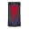
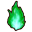
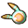
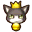

Reincarnation Quest
Reincarnate into the higher form of your race and get your Chronicle job.
- Level
- 100 or higher, Job Level 50
- Reward
- Your Chronicle job
- The higher form of your race
- Bonus looks or items, based on your level
Before you start
- You need all of these:
- Level 100 or higher.
- Job Level 50 in your Expert job, your Technical job, or both.
- Finish the fight with the Emil Dragon, which follows the Lv 99 weapon event.
- Novice: you need Lv 100 and Job Level 50 as a Novice. You become a Joker, and the end of the quest is different (see step 7).
- Your reward depends on your level when you reincarnate.
- Bring HP potions. HP regenerates on its own in the fights.
Walkthrough
1. Find the mysterious cat
-
Go to Northern Promenade. When you meet the requirements, a mysterious creature (a cat) appears there. If it doesn't appear, you don't meet them yet.
-
Talk to the creature until it runs away.
 ? ? ?
? ? ?

2. Talk to Valeria
-
Go to the Northern Cafe and talk to Valeria.
 Valeria
Valeria
3. Chase the cat
- Find the creature again in Northern Promenade and follow it into the Queen Audience Room.
- Follow it into the magic circle.
4. Answer the cat's questions
- In the White World, walk straight ahead to the creature sleeping there. It asks you 3 questions.
- Choose not to wake it.
- Answer that it is real.
- Any answer works for the third question.
- A wrong answer sends you back. Walk to the creature again.
5. Talk to Mucha and look in the White Book
-
In the room with the book, talk to Mucha.
-
Look inside the White Book. It sends you to face the opponent of your job line. Then return to the room with the book.
-
Talk to Mucha again.
 Mucha
Mucha
 White Book
White Book
6. Earn the proofs of strength
- Look inside the White Book and choose Moment of Emptiness (Time). There you earn the

Proof of Great Hero (Event) and the Proof of Soul Business Talent (Event).
Proof of Soul Business Talent (Event). - Defeat the Being Trapped in the Emptiness there for
 Pearl Soul and
Pearl Soul and 
Great Pearl Soul. - Combine them:
- 50 Pearl Soul or 1 Great Pearl Soul make 1
 Talisman of 100 Battles Practice. A golem there also sells it.
Talisman of 100 Battles Practice. A golem there also sells it. - 250 Pearl Soul or 5 Great Pearl Soul make 1 Proof of Soul Business Talent (Event).
- 50
- Use the Talisman of 100 Battles Practice to fight a copy of yourself. You have 10 minutes.
- Each talisman works once. Everyone who goes in needs a talisman and the quest.
- Backpacker lines and the Vates line skip this fight.
-
Fight the opponent of your job line.
Job line Opponent Chronicle job Swordsman Kamui Gladiator Fencer Risel Guardian Scout Kino Eraser Archer Griver Hawkeye Wizard Renette Force Master Shaman Renette Astralist Warlock Renette Soul Taker Vates Flor Cardinal Miner Camellia Maestro Farmer Canon Harvester Merchant Canon Royal Dealer Ranger Prish Strider
7. Reincarnate
- Look inside the White Book again. Take off your equipment first.
-
You get your Chronicle job and reincarnate into the higher form of your race. Your level and Job Level go back to 1.
Race Reincarnates into Emil High Emil Titania High Titania Dominion High Dominion -
Novice: you get the
 Book of Rebirth: A Journey to Find Yourself. Fill it at 7 spots around the world, show it to Mucha, then look inside the White Book again. See Joker for the spots.
Book of Rebirth: A Journey to Find Yourself. Fill it at 7 spots around the world, show it to Mucha, then look inside the White Book again. See Joker for the spots.
Rewards
You get the bonus for every level from 100 up to the level you reincarnate at. If you reincarnate at Lv 109, you get the bonuses for Lv 100 to 109, but not Lv 110.
| Level | High Emil | High Titania | High Dominion |
|---|---|---|---|
| 100 | Grace effect | 2 Feathers | 2 Feathers |
| 101 | Aureola effect | 3 Feathers | 3 Feathers |
| 102 | Ankle Feather effect | Wing color | Wing color |
| 103 | Catty Medamar Keeper | Wing color | Wing color |
| 104 | Catty Medamar Assault | Wing color | Wing color |
| 105 |  Catty Medamar General |
Wheel (Powers) | Tail (Trident) |
| 106 | Marionette Nekogurumi (Purple) | Ring (Seraphim) | Tail (Slim) |
| 107 | Marionette Nekogurumi (Blue) | Wing color | Wing color |
| 108 | Marionette Nekogurumi (Orange) | Ex Feather | Ex Feather |
| 109 | Black Cat | Ex 2 Feathers | Ex 2 Feathers |
| 110 |  Cat Sith |
Ex 3 Feathers | Ex 3 Feathers |
- From Lv 103, the High Emil bonuses are items.
- Switch effects, wings, halos and tails in the Rebirth window, opened from the equipment window. Default is your old look.
- Bonuses above the level you reincarnated at can be added later with Page EXP, in Increase Rebirth Privilege. This needs the Another Book, from the Another Chronicle quest Obtain Another Chronicle.
- The High Emil marionettes and partners can't be received a second time.
Good to know
- You keep your looks and the skills you learned. After you reincarnate, you can use all your Expert and Technical skills up to the Job Level you reached. There is no 5-skill limit like in Switch Job.
- No Reserve needed. You can learn every Expert and Technical skill without Reserve, so the Reserve tab is gone from the skill window. Each skill opens at its job's Job Level: a Job Level 50 skill needs that job at Job Level 50.
- At most 40 skills in total, counting first, second and third job skills.
- You can wear gear up to 10 levels above your own level.
- Renette is the hardest opponent. She is very hard for the Wizard and Shaman lines.
- Vates line tip: Flor heals itself and stands on light-element ground.